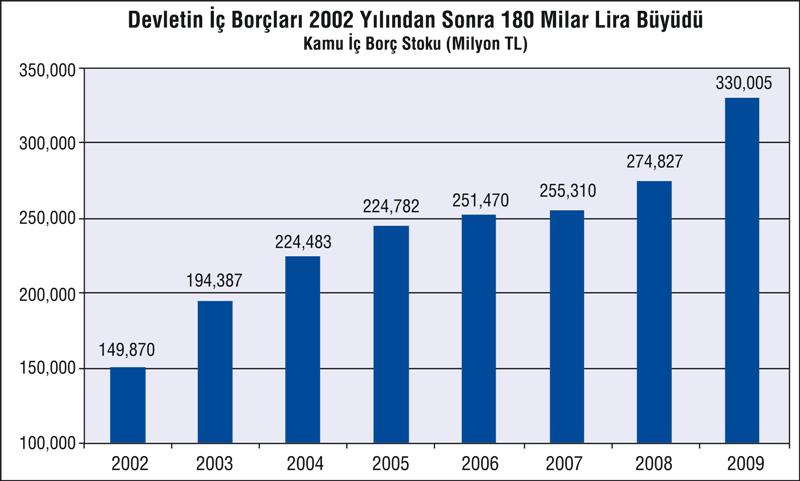
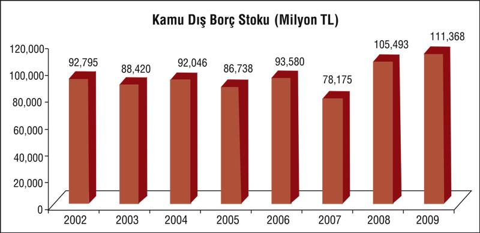
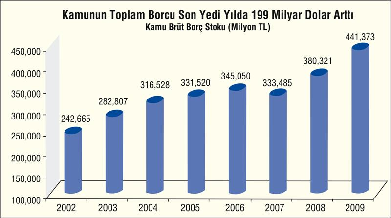
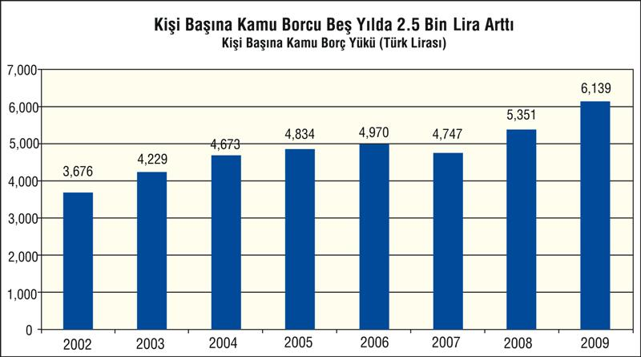
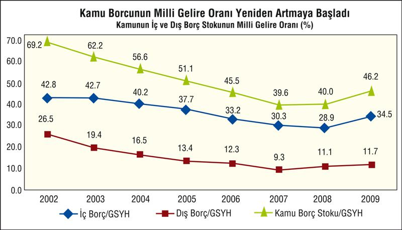
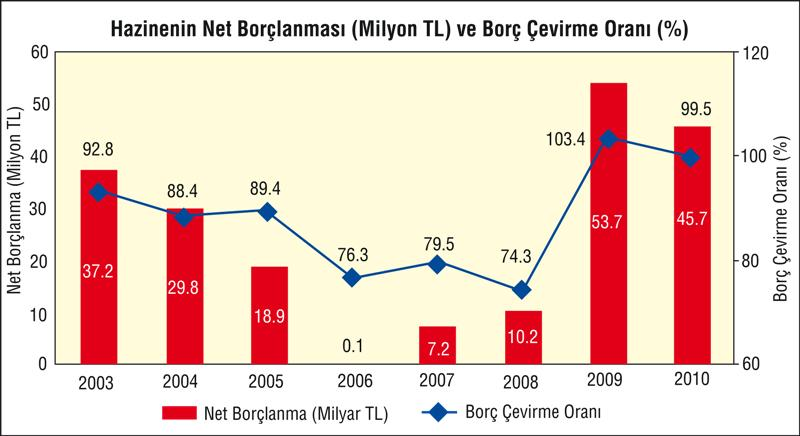
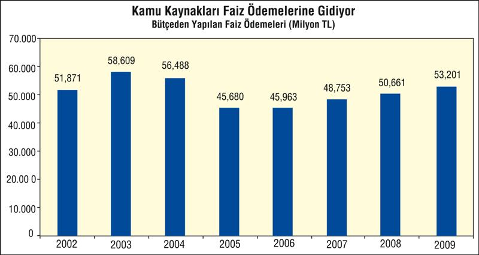

AKP iktidarının 2009'da hızla büyüyen ve 2010'da en büyük baş ağrısı olacak kamburlarını, büyüyen bütçe açığı ve açığı kapatmak için çığ gibi büyütülen borç stoku oluşturuyor.
IMF'nin bir anlaşma halinde, hemen müdahale edip AKP'yi kuşatacağı bu mayınlı alan, vergi, kamu harcamaları, faiz oranları gibi temel politikaları da etkiliyor. Eczacılarla, memur maaşları ile, işçi ücretleri ile, sağlık harcamaları ile, taban fiyatları ile ilgili artan gerilim ve mücadele, hep bu mayınlı alandan kaynaklanıyor ve önümüzdeki dönemde de sınıf çatışmalarının ana muharebe alanı olacaktır.
Yüzde 5'e yakın küçülme ile vergi gelirleri azalan AKP maliyesi, krizin etkilerini hafifletmek için gittiği ÖTV-KDV indirimi, yerel yönetim transferleri gibi önlemler ve başarısız "sağlıkta dönüşüm" politikasının faturasını büyük açıklar vererek topluma ödetiyor.
Açığın devasa boyutlara ulaşmasında vergi gelirlerinin artmamasına karşılık harcamaların doludizgin artması etkili oldu. Bütçe harcamalarındaki payı yüzde 35'i bulan "cari transferler"de ana kalemi, SGK açıkları için yapılan transferler oluşturdu. Kriz ile birlikte yoğun işçi çıkarmaları SGK'nın prim gelirlerini hızla azalttı. Yanı sıra, birçok işveren ve Bağkurlu, prim borcunu ödemiyor, ya da ödeyemiyor. Bu durum, SGK'yı hızla zaafa uğratıyor. Dahası, işverenlere teşvik olarak getirilen işveren priminin 5 puan azaltılmasının SGK'ya maliyeti 3 milyar TL'ye yakın gelir kaybı olmuştur. "Sağlıkta dönüşüm" adı altında yapılan sağlıkta özelleştirme, kurumu hızla özel hastane, kuruluş ve ilaç firmalarına kaynak aktaran, savurgan bir pompa durumuna getirmiştir.
2009 yerel seçim konjonktüründe, hükümetin artırdığı "popülist harcamalar" da açığı büyütmüştür. Bu açıkları kapatmak için başvurulan kamu borçlanması ise Türkiye'nin borç stokunu devasa boyuta ulaştırmıştır. Kriz yılında borçlar yüzde 16'ya yakın artmış ve milli gelirin yüzde 61'ine çıkmıştır. AB ölçütlerine göre, bu oranın yüzde 60'ın üstüne çıkması alarmların çalması anlamını taşır ve hükümetin borç yükü için şimdi bu alarm çalar hale gelmiştir.
2009 yılında 52 milyar lira olarak gerçekleşen bütçe açığının 2010 yılında 50 milyar, 2011 yılında 45,1 milyar ve 2012 yılında 39,1 milyar lira olacağı tahmin ediliyor. Bu nedenle kamu borç stokunun gelecek yıllarda da en az söz konusu rakamlar kadar büyümesi kaçınılmaz gözüküyor.
Özellikle 2004 yılından itibaren artış hızı oldukça yavaşlayan iç borç stoku 2008 yılının son çeyreğinden itibaren adeta bir "füze" gibi yükseliyor. Bütçe açığında yaşanan artışa bağlı olarak hızla yükselmeye başlayan iç borç stoku, ilerleyen yıllarda kamu bütçesi üzerinde önemli bir faiz yükü oluşturacak.
2008 yılında 19, 5 milyar lira artarak 274,8 milyar liraya kadar yükselen iç borç stoku 2009 yılında ise 55,1 milyar liralık artışla 330 milyar liraya kadar çıktı.

Artan borçlanma ihtiyacına bağlı olarak Hazine'nin dış borçları da artmaya başladı. 2008 yılında, dolar kurunun artmasının da etkisiyle 78,2 milyar liradan 105,5 milyar liraya çıkan kamunun dış borçları 2009 sonu itibariyle ise 111,4 milyar lira olarak gerçekleşti.
Kamu dengelerindeki bozulmaya paralel olarak kamunun dış borç stokundaki artışın gelecek yıllarda devam etmesi bekleniyor.

Devletin borçları da yeniden artmaya başladı. 2008 yılının son çeyreğinden itibaren yeniden yüksek bir borçlanma temposuna giren devletin toplam iç ve dış borç stoku 2009 yılı sonunda 441,4 milyar liraya kadar yükseldi.
2002 yılında 242,7 milyar lira olan kamunun toplam iç ve dış borç stoku, 2006 yılında 345 milyar liraya kadar yükseldikten sonra 2007 yılında 333, 5 milyar liraya inmişti.
IMF ile uygulanan programın Mayıs 2008'de sona ermesinden sonra kamu harcamaları üzerindeki disiplinin kaybedilmesinin de etkisiyle 2008 yılında 46,8 milyar lira artan kamu borç stoku 2009 yılında ise 61,1 milyar lira artarak 441,4 milyar liraya kadar yükseldi.
| KAMUNUN İÇ VE DIŞ BORÇ STOKU VE MİLLİ GELİRE ORANI (Milyar TL) | ||||
| Dış Borçlar | İç Borçlar | Toplam Borç | Borç Stoku/ GSYH, % | |
| 2002 | 93 | 150 | 243 | 69, 2 |
| 2003 | 88 | 194 | 283 | 62, 2 |
| 2004 | 92 | 224 | 317 | 56, 6 |
| 2005 | 87 | 245 | 332 | 51, 1 |
| 2006 | 94 | 251 | 345 | 45, 5 |
| 2007 | 78 | 255 | 333 | 39, 6 |
| 2008 | 105 | 275 | 380 | 40, 0 |
| 2009 | 111 | 330 | 441 | 46, 2 |

Türkiye'nin kamu borç stokundaki tehlikeli tırmanışı kişi başına borç yükündeki gelişim çok daha çıplak bir şekilde gösteriyor. 2002 yılında 3 bin 647 lira olan kişi başına kamu borcu 2009 yılında 6 bin 139 liraya kadar yükseldi. Kişi başına borç miktarında son yedi yılda yüzde 67 oranında artış kaydedildi.

Kişi başına kamu borç yükündeki artışı dolar cinsinden yapılan hesaplama da net bir şekilde ortaya koyuyor. 2002 yılında 2 bin 249 dolar olan Türkiye'deki kişi başına düşen kamu borcu miktarı Kasım 2009 itibariyle 4 bin 77 dolar düzeyine yükseldi. Kişi başına borç miktarı son yedi yılda dolar cinsinden ise yüzde 84 oranında artış kaydetti.

Milli gelirin küçülmesi ve kamunun iç ve dış borç stokunun yeniden hızla artmaya başlaması, borcun milli gelire (GSYH) oranının da yükselmeye başlamasına neden oldu.
2001 krizinde 20 dolayında bankanın iflasının yükünün Hazine'nin üzerinde kalması sonucu, 2002'de kamu borç stoku, milli gelirin yüzde 69'u düzeyine kadar çıkmıştı. Ancak, izleyen yıllarda IMF ile yapılan anlaşmanın gereği genel bütçede izlenen "mali disiplin" ile borç stoku yıldan yıla azaltıldı ve 2007'de kamu borç stokunun milli gelire oranı yüzde 39, 6'ya kadar indirildi. "Mali disiplin" bir yandan dolaylı vergilerin artırılması, önemli özelleştirmelere gidilmesi ve gelirlerinin bütçeye transferleri ile; harcama ayağında da çeşitli sosyal harcamaların azaltılması ve kamu personel giderlerinin, kamu personel sayısının, kamu yatırımlarının azaltılması gibi önlemlerle alındı. Dünyadaki likidite bolluğunun faizleri düşürmesi de borçların çevrilme maliyetlerinin ve stokun azaltılmasında etkili oldu.
Kamu mali dengelerinin 2008 yılından başlayarak yeniden alt üst olmasıyla birlikte kamu borç yükü yükselmeye başladı. 2008 yılı sonunda yüzde 40 olan kamu borçlarının GSYH'ye oranı 2009 yılında yüzde 46, 2 olarak gerçekleşti.
| Kamu Borcunun GSYH'ye oranı (%) | |||
| İç Borç /GSYH | Dış Borç/GSYH | Kamu Borç Stoku/ GSYH | |
| 2002 | 42, 8 | 26, 5 | 69, 2 |
| 2003 | 42, 7 | 19, 4 | 62, 2 |
| 2004 | 40, 2 | 16, 5 | 56, 6 |
| 2005 | 37, 7 | 13, 4 | 51, 1 |
| 2006 | 33, 2 | 12, 3 | 45, 5 |
| 2007 | 30, 3 | 9, 3 | 39, 6 |
| 2008 | 28, 9 | 11, 1 | 40, 0 |
| 2009 | 34, 5 | 11, 7 | 46, 2 |
Kamu sektörünün içerisinde bulunduğu yüksek borçluluk düzeyi, kamunun kalkınma için harcayabileceği kaynakların faiz ödemesi olarak yerli ve yabancı bir avuç yatırımcıya ödenmesine yol açıyor.
Ne yazık ki 2003 yılından 2005 yılına kadar azalan bütçeden yapılan iç ve dış borç faiz ödemelerinin tutarı, faiz oranlarında yaşanan düşüşe rağmen yeniden yükseliyor.

Türkiye 2003-2009 yıllarını kapsayan son 7 yıllık dönemde devlet bütçesinden 359,4 milyar liralık faiz ödemesi yaparken, yatırımlara ayrılan tutar ise sadece 80,2 milyar lira düzeyinde kaldı. Yüksek kamu borçlanması, gelecekte daha az yatırım daha çok faiz ödemesi anlamına geliyor.

| Yatırım ve Faiz Harcamaları (Milyon TL) | ||
| Yatırım | Faiz | |
| 2003 | 7.165 | 51.871 |
| 2004 | 8.050 | 58.609 |
| 2005 | 9.805 | 56.488 |
| 2006 | 10.045 | 45.680 |
| 2007 | 10.683 | 45.963 |
| 2008 | 15.767 | 48.753 |
| 2009 | 18.662 | 50.661 |
Türkiye 2003-2009 yıllarını kapsayan son 7 yıllık dönemde devlet bütçesinden 359,4 milyar liralık faiz ödemesi yaparken, yatırımlara ayrılan tutar ise sadece 80,2 milyar lira düzeyinde kaldı.
Yüksek kamu borçlanması, gelecekte daha az yatırım daha çok faiz ödemesi anlamına geliyor.